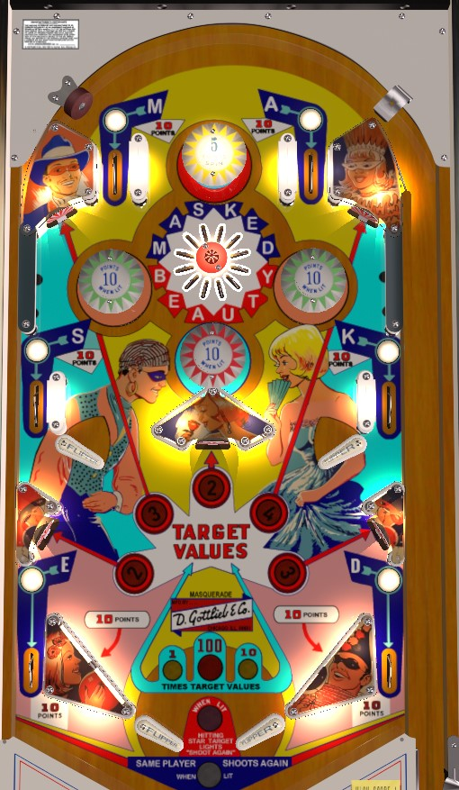

Letters in Masked can be earned from the multi-bumper at the top of the playfield or rollover lanes. Letters in Beauty can only be earned from the multi-bumper. Collecting a letter scores 10 points. The top pop bumper rerolls the values of the game's 5 standup targets; they can be 2, 3, 4, 5, or Star. The Star has a value of 1 point, but hitting a Star standup target also awards an extra ball if the pink light at the bottom of the table is lit. If Masked or Beauty is complete, but not both, standup targets score 10 times the displayed value. If both Masked and Beauty are complete, standup targets score 100 times the displayed value, but hitting any standup target will reset the entire Masked Beauty sequence and reset the target value multiplier to 1x. Green and red pop bumpers score 1 point or 10 when lit and are lit alternately (or together, or not at all) based on various switch hits. Slingshots and all rollover lanes score 10 points.
The game can be set to preserve Masked Beauty letters- meaning their status carries over from player to player, ball to ball, and game to game- or the game can reset all Masked Beauty letters every time the ball drains without an extra ball being earned. The pink insert, which determines whether hitting a Star standup target scores an extra ball, can either be lit constantly or alternately based on 10-point switch hits.
